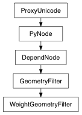

Set the plugStringArray argument to contain the names of the plugs on this node that correspond to the components in the selection list. The operation will fail if none of the items in the selection list correspond to components weighted by this cluster.
| Parameters: |
|
|---|---|
| Return type: | list list |
Derived from api method maya.OpenMayaAnim.MFnWeightGeometryFilter.getWeightPlugStrings
Gets the weights of the components that correspond to the geometry at the specified plug index.
| Parameters: |
|
|---|---|
| Return type: | (PyNode, float list) |
Derived from api method maya.OpenMayaAnim.MFnWeightGeometryFilter.getWeights
Sets the weights of the specified components of the object whose DAG path is specified.
| Parameters: |
|
|---|
Derived from api method maya.OpenMayaAnim.MFnWeightGeometryFilter.setWeight
Undo is not currently supported for this method
Sets the plugStrings argument to be a string (separated by spaces) containing the names of the plugs on this node that correspond to the components in the selection list. The method can be useful in conjunction with setting keys on a number of plugs. The operation will fail if none of the items in the selection list correspond to components weighted by this cluster.
| Parameters: |
|
|---|---|
| Return type: | unicode |
Derived from api method maya.OpenMayaAnim.MFnWeightGeometryFilter.weightPlugStrings